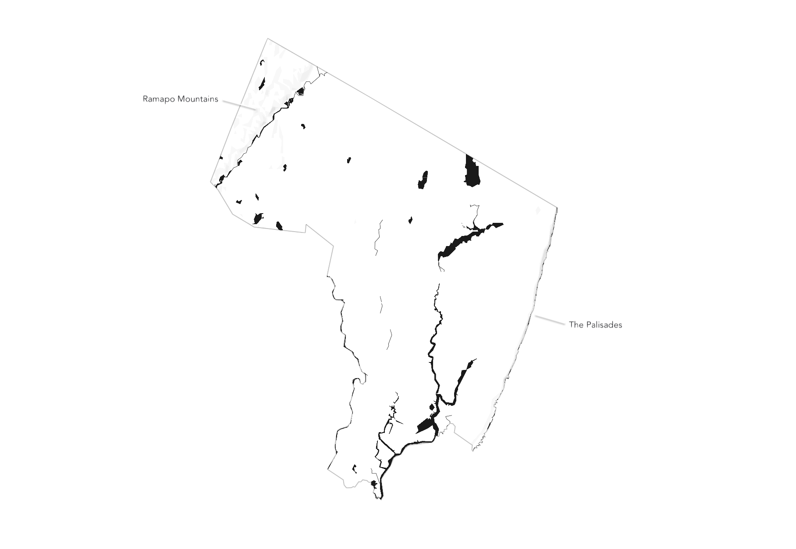

Bergen
Notes on the County of Bergen
Boundaries

Bergen County is located in the northeastern corner of New Jersey, bordering New York State to the north and east. It shares its southern boundary with Hudson County and its western boundary with Passaic County. The county is part of the New York City metropolitan area, making it a pivotal region for both state and interstate interactions.
Water

Bergen County is enriched with various bodies of water. The Hackensack River and the Passaic River flow through the region, providing vital resources for wildlife and recreation. The county is also home to several reservoirs, including the Oradell Reservoir, which supplies water to many residents.
Mountains & Cliffs
The county features parts of the Ramapo Mountains in its northwest, offering a scenic backdrop and recreational opportunities like hiking. The Palisades, towering cliffs along the Hudson River, provide stunning views and are a geologically significant feature of the area.
Transportation

Bergen County boasts a robust transportation network, including major highways like Interstate 80, Interstate 95 (the New Jersey Turnpike), and Routes 4, 17, and 46. Public transportation options, including NJ Transit trains and buses, connect the county to New York City and surrounding areas, facilitating commuting and travel.
Towns

The county encompasses a diverse array of towns and municipalities, each with its unique character. Hackensack serves as the county seat, while other notable towns include Englewood, Teaneck, and Ridgewood. These areas offer a mix of suburban living, cultural heritage, and thriving business districts, reflecting the county's dynamic nature.